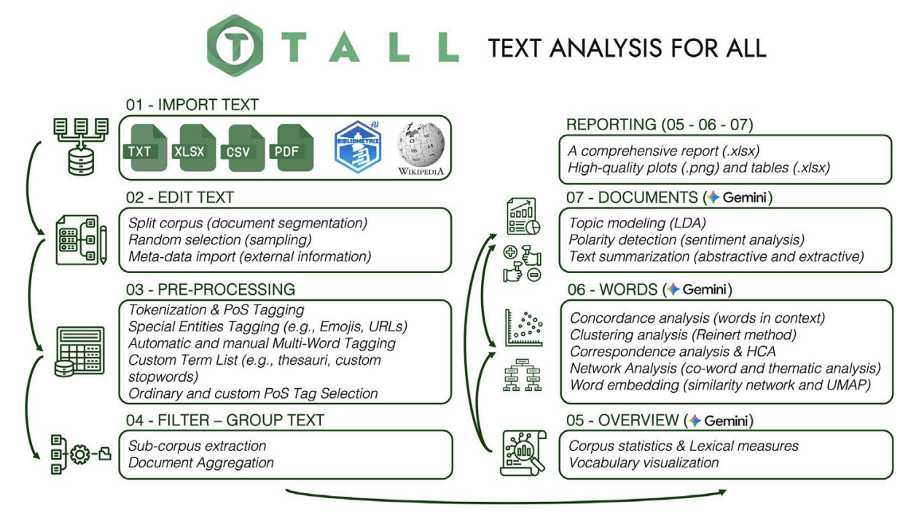

Over a year of hard work went into designing, building, and structuring a text-data-analysis tool accessible to everyone. Following our release on CRAN, the response has been incredible, and I'm super happy to announce that our official paper on TALL is finally out. Published in SoftwareX (Elsevier), this milestone is the result of a great research synergy with my co-authors and the brilliant software developers: Massimo Aria, Maria Spano, Corrado Cuccurullo, and Michelangelo Misuraca.
TALL (Text Analysis for All) is an interactive R-Shiny application for exploring, modeling, and visualizing textual data, designed so that rigorous quantitative and qualitative text analysis is within reach of everyone, without requiring any coding skills.
A workflow for all
In the paper, we present the app by walking through its core workflow, a robust framework designed to support a huge variety of options and advanced text-analysis features. The pipeline guides the user from importing and editing the text, through pre-processing, filtering, and grouping, all the way to reporting, and to dedicated modules for documents, words, and corpus overview, including topic modeling, co-occurrence networks, and lexical measures.

Try it out
Try it out, test it, and play around with it. Most importantly, we'd love to hear your feedback so we can keep improving TALL and integrating new possibilities into the app.